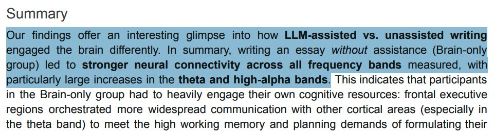

大笨蛋不會溝通🕊bsky
@appleneko2001
@raycat2021 我覺得 還是要看人如何使用AI 如果連自己的思考都放棄 全然交給AI 停止吸取知識 那 確實是很危險
至少對我來說 還好我沒有重度依賴于AI 有時候我甚至覺得它比我弱 有些方面

徐老猫
@raycat2021
惨了，MIT团队研究发现，使用ChatGPT的人智商倒退得厉害。
脑部神经元联系降低了整整47%。
83%的人用ChatGPT完成论文后无法引用关键论据。
而教师很容易辨识出哪些文章用了ChatGPT：“无趣，内容空洞，表述完美但缺乏个人见解。”
一旦丢开ChatGPT，写作能力远差于从不使用ChatGPT的人。 https://t.co/2jNpD6om7T